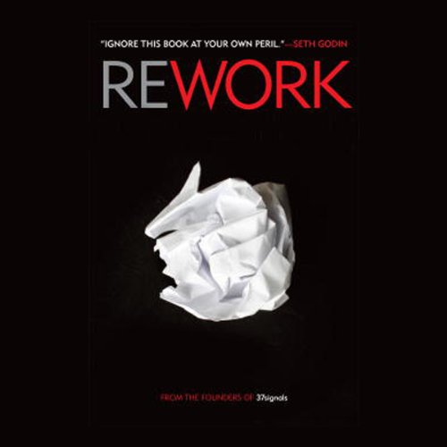

Library › Business & Startups
Rework — Summary & Key Lessons

Change the way you work forever — the anti-corporate, anti-hustle, anti-plan manifesto from the 37signals founders.
📖 OPEN THE FULL INTERACTIVE BREAKDOWN →🌐 Read it in Hindi, Hinglish, Gujarati, Tamil & 22 more languages — free, with audio.
💡 The Big Idea
Fried and Hansson built Basecamp (37signals) into a famously profitable software company with a tiny remote team, no venture capital, no five-year plans, and no 60-hour weeks — then wrote down every rule they broke. Rework's chapters are two-page punches: planning is guessing; learn from your successes, not your failures; embrace constraints because less is a good thing; build half a product, not a half-assed product; launch now; meetings and interruptions are where workdays go to die; out-teach your competition instead of outspending them; and stay small on purpose — scale is a choice, not a destiny. It's the manual for building calm, profitable things in a culture addicted to hustle theater.
🧠 The 5 Key Lessons
Lesson 1: Ignore the Real World — Planning Is Guessing
Takedowns & Go: First / Planning Is Guessing
'That would never work in the real world' is what people say to protect their own resignation — the 'real world' isn't a place, it's an excuse. The takedowns continue: long-term business plans are fantasies (you have the least information on day one, exactly when the plan is written); strategy calcifies into obligation ('we planned it, so we must do it') just when you need to improvise; and failure is NOT a rite of passage — the 'fail fast' cult ignores that failure mostly teaches what not to do, while success teaches what works and repeats (Harvard data: already-successful founders far outperform failed ones on the next venture). Decide what you'll do THIS week, not this year. Working without a plan feels scary; walking a fantasy plan off a cliff feels professional right up to the fall.
📖 Example: The authors' own company was the standing rebuttal: no business plan, no growth targets, no funding — just decisions made at the moment of maximum information. Basecamp itself was a side project built to manage their design clients; it outgrew the agency… Read the full example →
⚡ Do this: Replace your annual plan with a decided WEEK: what ships in the next five days? Re-decide every Monday. Keep long-term thinking to a direction sentence, not a document.
Lesson 2: Workaholism Is Stupid — Be a Quitter of the Right Things
Go: Workaholism / Enough with 'Entrepreneurs'
Workaholics aren't heroes; they're a problem: they burn out, create guilt-cultures where everyone must stay late, generate busywork to fill hours ('they feel like they're being useful — but they're just USING hours'), and worst, they substitute brute hours for thinking — the real hero already found a faster way and went home. The all-nighter's output needs redoing by Wednesday. Twin lesson: your estimates are garbage anyway (humans can't estimate a fortnight; break everything into small pieces), long to-do lists never get done (make short ones; prioritize by physically putting ONE thing at top), and quitting the wrong project isn't failure — throwing good hours after a bad idea because of sunk effort is. Calm, rested, focused people build better things than exhausted martyrs. Every time.
📖 Example: 37signals ran 4-day workweeks all summer, banned most meetings, and shipped industry-defining software with a team a tenth the size of competitors — while VC-fueled rivals bragged about sleeping under desks and mostly died. The authors' visual: the… Read the full example →
⚡ Do this: Cap this week at your contracted hours — force the prioritization the cap creates. Break your current big task into pieces small enough to estimate honestly (under a day each), and quit one zombie project you're continuing only because you've already fed it.
Lesson 3: Embrace Constraints — Build Half a Product
Progress: Less Is a Good Thing / Half, Not Half-Assed
'I don't have enough time/money/people' is — reframed — excellent news: constraints force creativity and ship discipline; bloated resources fund bloated products. The editing ethic: you're better off with a kick-ass half than a half-assed whole — cut your ambition in half and build the remaining half brilliantly (most software is 80% features no one uses). Start at the epicenter: identify the one thing your product cannot exist without (the hot dog in the hot dog stand — not the cart, not the name, not the condiments) and build THAT first; everything else is a detail or can wait. Details, in fact, come later by design: nail the chapter structure before choosing fonts. And ignore the details early enough and many resolve themselves.
📖 Example: Basecamp launched WITHOUT the ability to bill customers — a 'fatal' omission by any planning standard. The team knew they had 30 days before the first monthly invoices came due, so they shipped and built billing while real users used the real product. 'We… Read the full example →
⚡ Do this: Take your current project and cut scope 50% — ship the kick-ass half. Identify the epicenter first: write the one sentence 'this cannot exist without ___' and build in strict distance-from-epicenter order.
Lesson 4: Launch Now — and Out-Teach the Competition
Progress: Launch Now / Promotion: Out-Teach Your Competition
'When it's done' is a lie you tell yourself; if it's core-functional, ship it — momentum, morale, and REAL feedback all live on the other side of launch, and problems you're polishing now often aren't the problems users actually hit. Then market like a teacher, not a shouter: big companies can outspend you on ads but almost none will out-TEACH you — sharing your knowledge (recipes, code, techniques, behind-the-scenes) builds an audience that trusts you before you sell anything. Audiences beat advertising: when you have something to announce, you speak to people who chose to listen. Emulate chefs: they give away the recipes in cookbooks and get MORE famous — your 'secrets' are worth more shared than hoarded. And embrace obscurity while you have it: nobody watching means free reps to get good.
📖 Example: 37signals' blog Signal v. Noise became one of tech's most-read publications by teaching — design opinions, code releases (they open-sourced Ruby on Rails, the framework Basecamp was built on, which made them world-famous and cost competitors nothing to… Read the full example →
⚡ Do this: Set a launch date within 30 days for the core-functional version — ship it embarrassed. Simultaneously start teaching weekly in public: one lesson from your work, given away free, on a channel you own.
Lesson 5: Meetings Are Toxic — Protect the Alone Zone
Productivity: Meetings Are Toxic / Interruption Is the Enemy of Productivity
The math nobody does: a one-hour meeting with ten people is a TEN-hour meeting — priced in the company's scarcest currency, uninterrupted attention. Meetings drift, run on vague agendas, procreate (each one spawns the next), and usually convey information a sentence could carry. The deeper disease is interruption itself: meaningful work needs long unbroken stretches, and modern offices chop the day into 'work moments' — 45 minutes here, 15 there — in which nothing deep can happen. Prescriptions: institute the ALONE ZONE (half a day, or an entire morning, of no-talk, no-message time); switch to passive communication (email/chat that can be ignored during focus) over shoulder-taps; and when a meeting is truly unavoidable: set a timer, invite the minimum, always have a specific problem, and end with a decision and an owner.
📖 Example: The authors' companies ran on 'office hours' inversions: instead of anyone interrupting anyone anytime, experts had posted hours for questions — and the sky didn't fall; questions batched themselves or answered themselves. Their cost illustration became a… Read the full example →
⚡ Do this: Block a daily 3-hour alone zone (mornings work best): notifications off, chat closed, door metaphorically shut. Before accepting any meeting this week, compute its true cost (attendees × duration) and demand the agenda justify the price.
✅ 5-Step Action Plan
- Rename plans as guesses; decide only the next week in detail.
- Cap your hours; slice tasks small; quit one sunk-cost zombie.
- Cut scope in half; build from the epicenter outward.
- Launch the core in 30 days; teach one free lesson weekly.
- Install the daily alone zone; price every meeting before accepting.
⚠️ When This Doesn't Work
Rework's 'small is beautiful, ignore the competition, ship fast' philosophy works for software that costs nothing to scale — and misleads brutally in capital-heavy businesses. Better Place raised $850 million to build battery-swap stations for electric cars, ignored the 'experts,' and died because infrastructure is not a website. Before you apply 37signals' rules, check your cost curve. If every customer costs you a factory, small is beautiful and dead.
💀 The Graveyard Proves It
🔋 Better Place — $850M to Swap Batteries Nobody Wanted Swapped. Burn: $850M. Read the full case study →
💬 Best Quotes from Rework
- “Planning is guessing.”
- “Workaholics aren't heroes. They don't save the day, they just use it up.”
- “What you do is what matters, not what you think or say or plan.”
Interactive version: mark lessons as read, listen in your language, share quote cards.